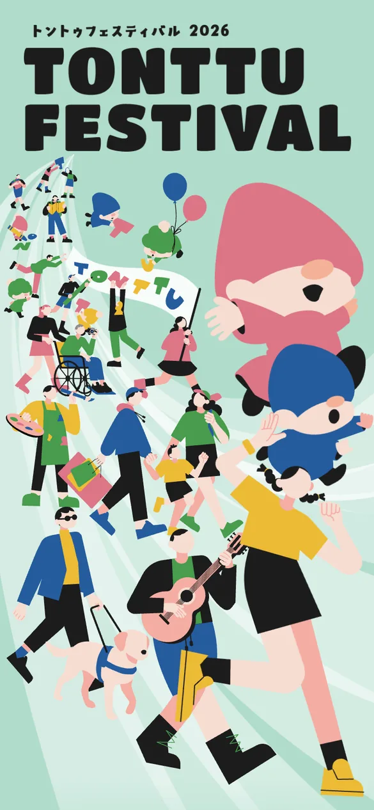
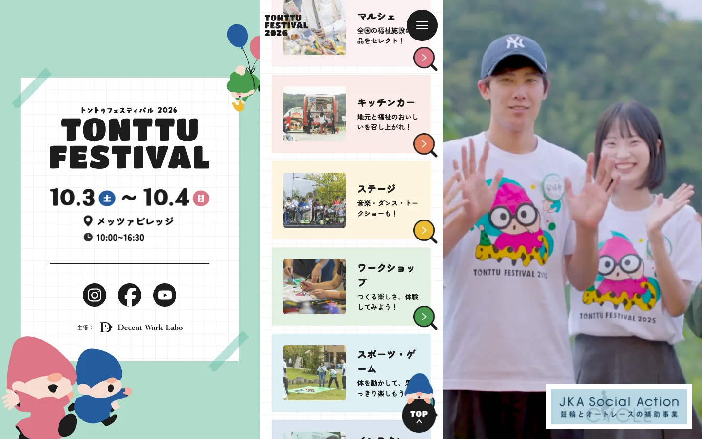
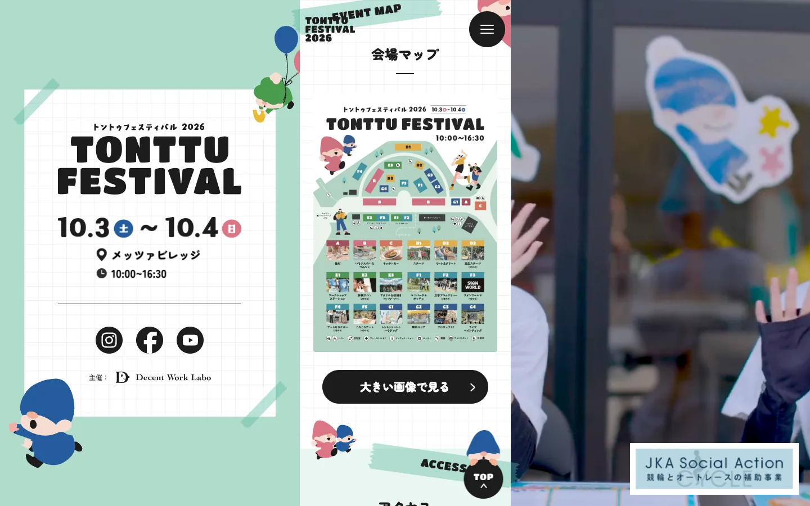
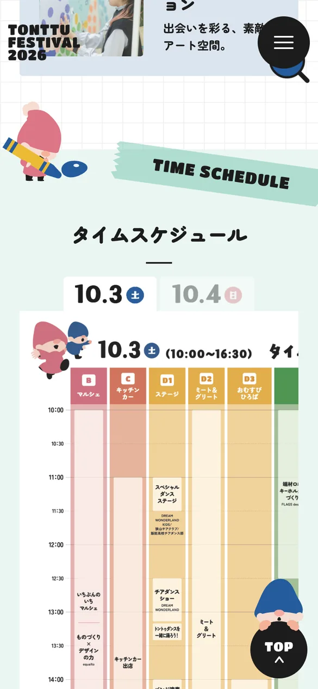
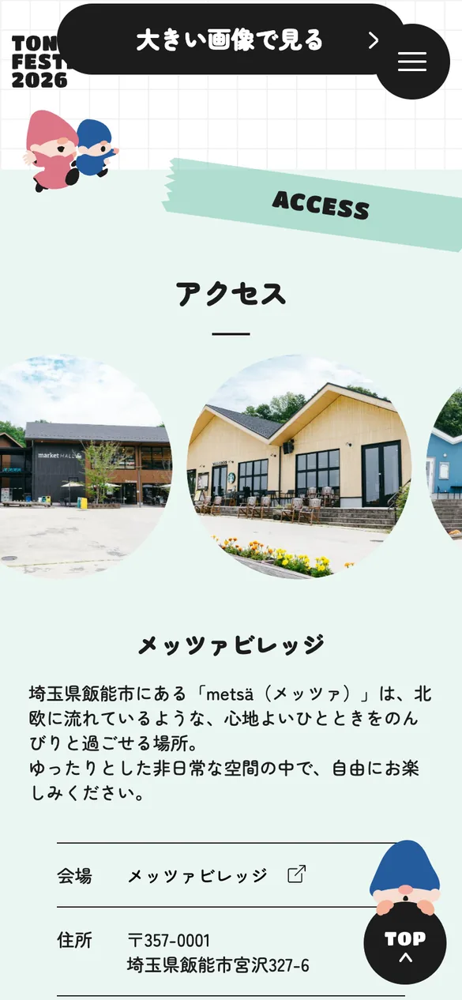

福祉施設や障がいのある方々とともにつくるインクルーシブなフェス「トントゥフェスティバル2026」のサイトを、コーディング担当として実装しました。
マルシェ・ステージ・ワークショップなど情報量の多いデザインをWordPressオリジナルテーマに忠実に落とし込み、ニュースや動画・絵本・4コマ漫画といった更新頻度の高いコンテンツを管理画面から運用できる構成にしています。
- 担当
- コーディング・実装
- 構成
- WordPress（オリジナルテーマ）
- 対応
- PC / スマートフォン
- WordPressオリジナルテーマへの実装
- ニュース・動画・絵本・4コマ漫画のCMS管理化
- レスポンシブ対応




